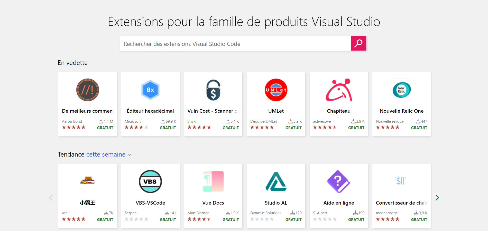

visualstudiocode
Visual Studio Code est un éditeur de code extensible développé par Microsoft pour Windows, Linux et macOS2.
Les fonctionnalités incluent la prise en charge du débogage, la mise en évidence de la syntaxe, la complétion intelligente du code, les snippets, la refactorisation du code et Git intégré. Les utilisateurs peuvent modifier le thème, les raccourcis clavier, les préférences et installer des extensions qui ajoutent des fonctionnalités supplémentaires.
Le code source de Visual Studio Code provient du projet logiciel libre et open source VSCode de Microsoft publié sous la licence MIT permissive, mais les binaires compilés sont des logiciels gratuits pour toute utilisation.
Dans le Stack Overflow 2019 Developer Survey, Visual Studio Code a été classé comme l'outil d'environnement de développement le plus populaire, avec 50,7% des 87317 répondants déclarant l'utiliser.

les extention :
